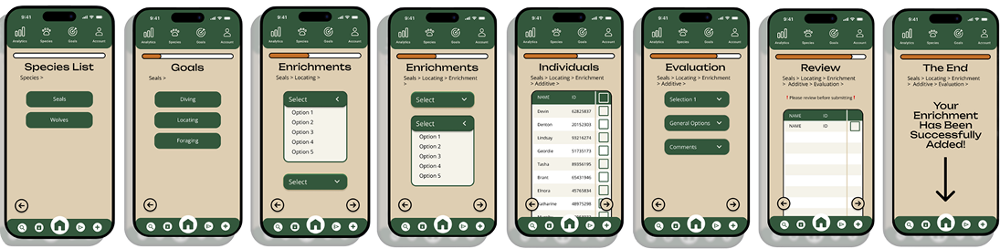
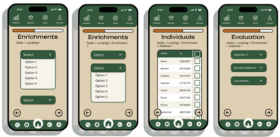
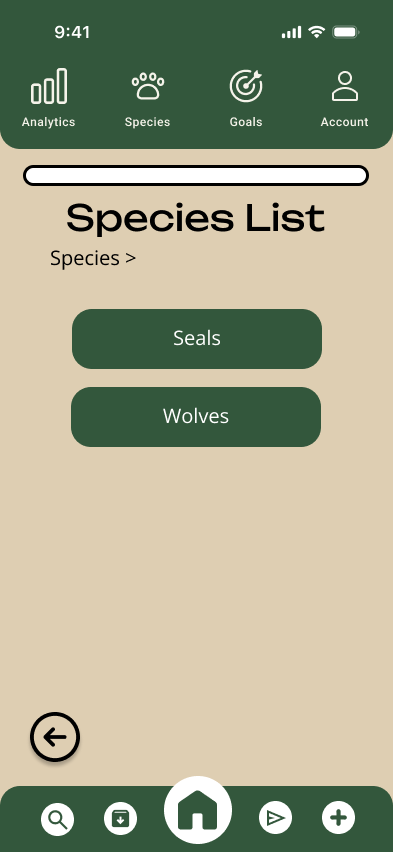
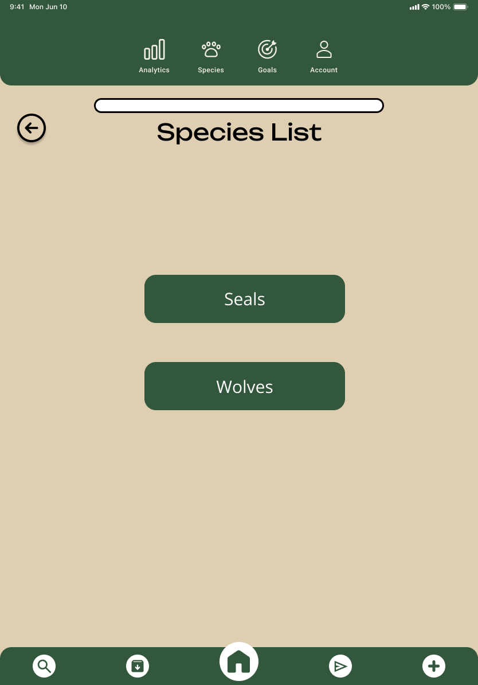
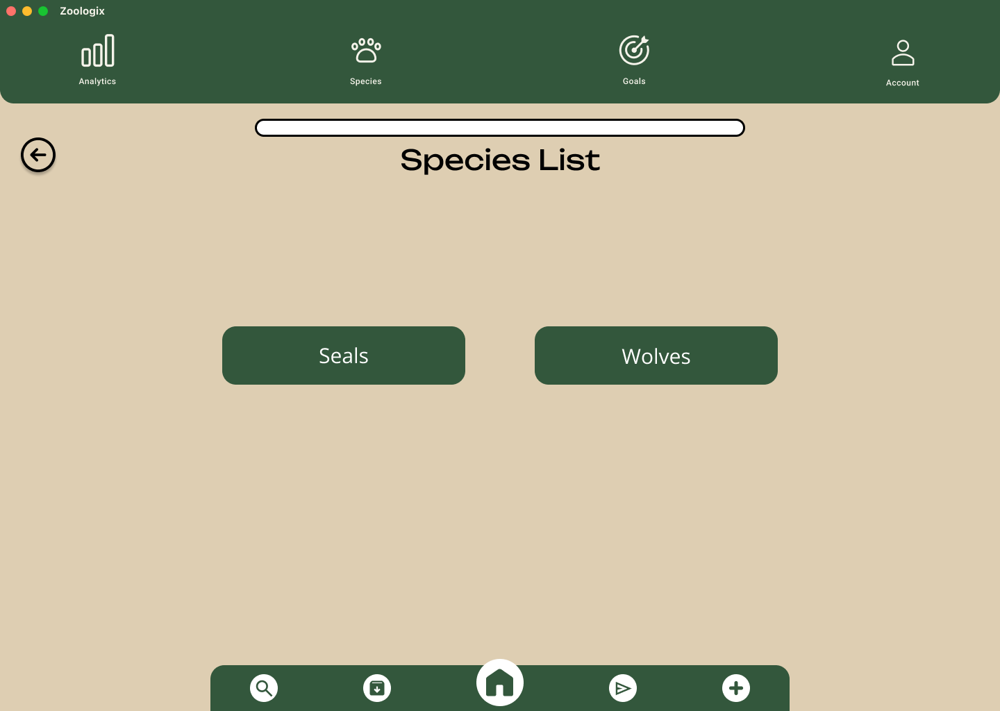
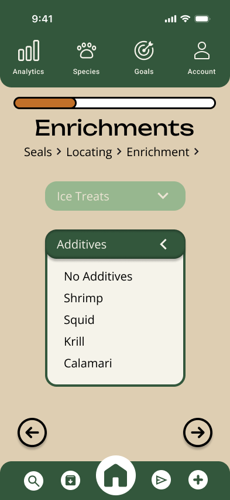

Here is a snapshot of the log enrichment section of Zoologix, designed by my team.
Web Developer • UX Designer
Project Manager • Web Developer • UX Designer

Mateo Siechert, Andrew Nolt, Jordan Goodall, Naylia Vang, Sienna Molina

Here is a snapshot of the log enrichment section of Zoologix, designed by my team.
As an intern for the Fresno Chaffee Zoo, I worked on the enrichment application named Zoologix, specifically the logging enrichment portion. Previously, FCZ’s current enrichment tracking application did not allow them to log enrichments on the go because it is not available on mobile. Zoologix fixes that and makes it easier for animal curators to log enrichment activities than ever before.




Zoologix in different screen sizes, optimized by Mateo Siechert
